Client Case Study · China Airlines
Fly Into
Fly Into
2026.
Aspirational, on brand social for Taiwan's flagship carrier.

Aspirational, on brand social for Taiwan's flagship carrier.
China Airlines is Taiwan's flagship carrier. I help run their Malaysia social with a strict visual DNA: a consistent logo lockup, signature skies, and the aircraft always composed just so, so every post feels instantly recognisable. Across the turn of 2026, that meant two connected monthly stories.
January opened with New Year, New Horizons, a Resolution Trips series that turned travel goals into real destinations: find your zen in Japan, aim higher across the Pacific, time travel through Seoul. February softened into Reunion, a festive push about flying home for the season, tied to Chinese New Year offers and a little Taiwan transit treat.
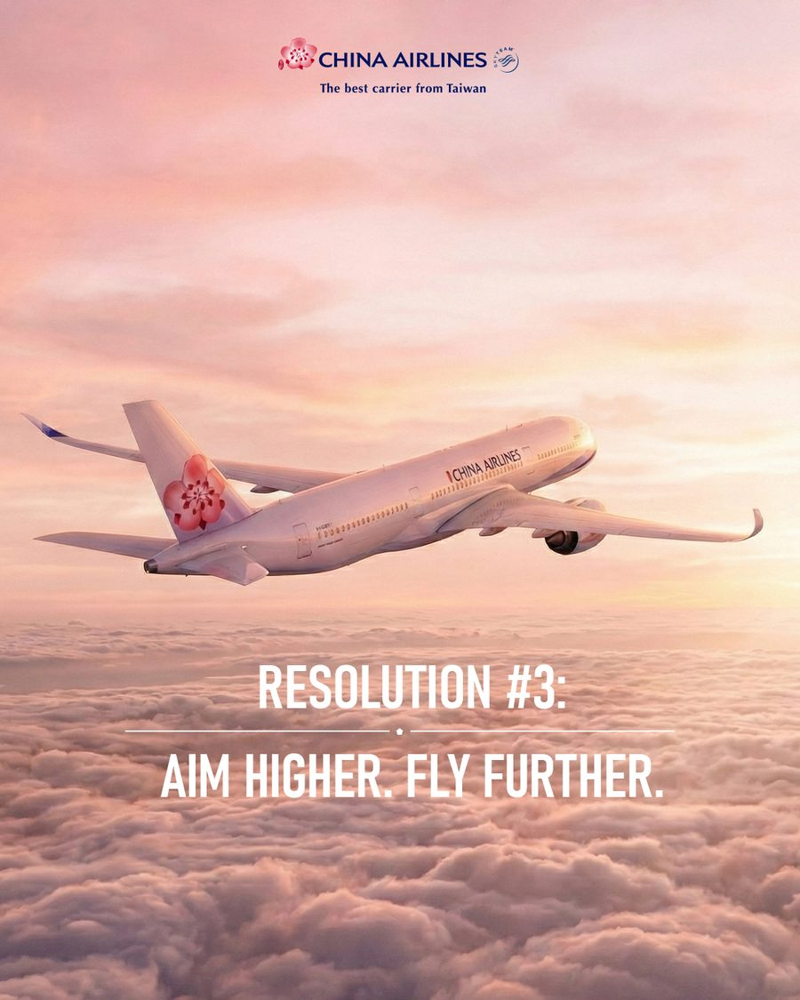
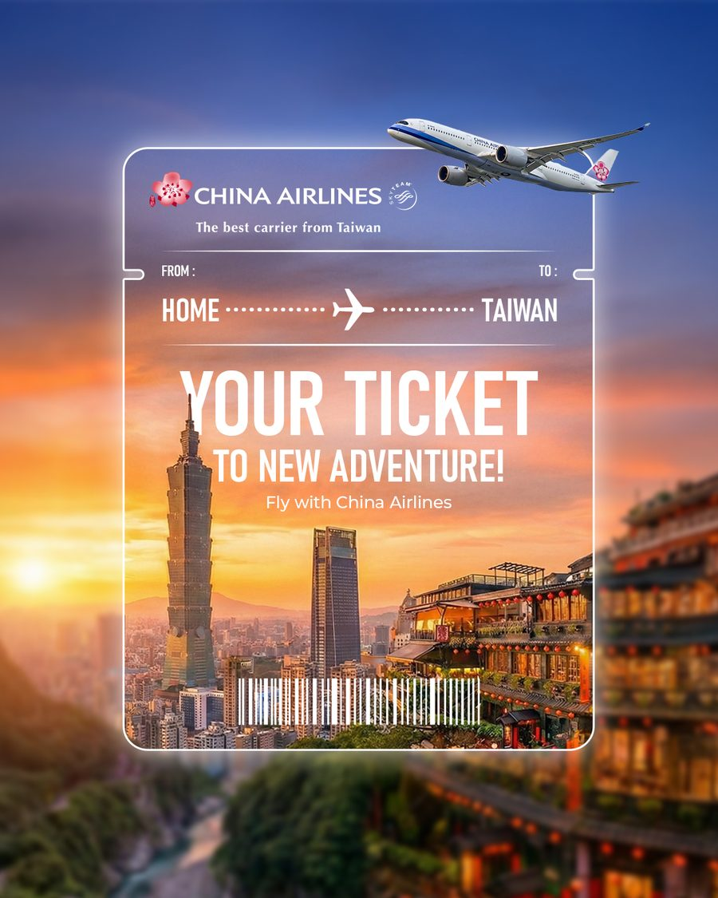
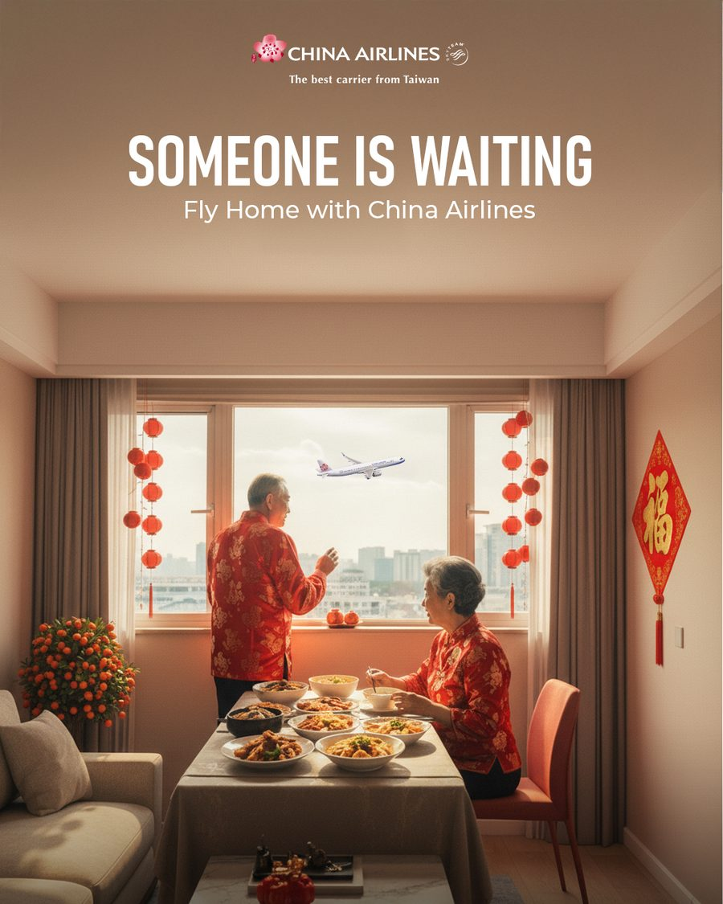
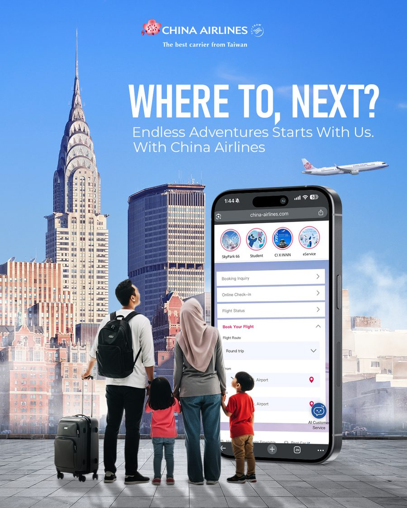
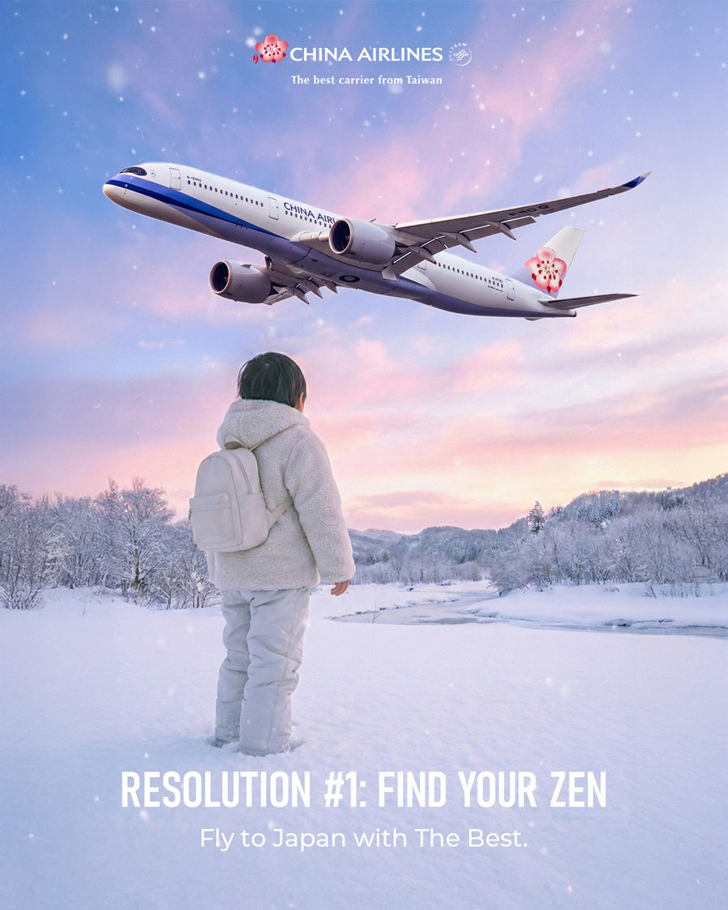
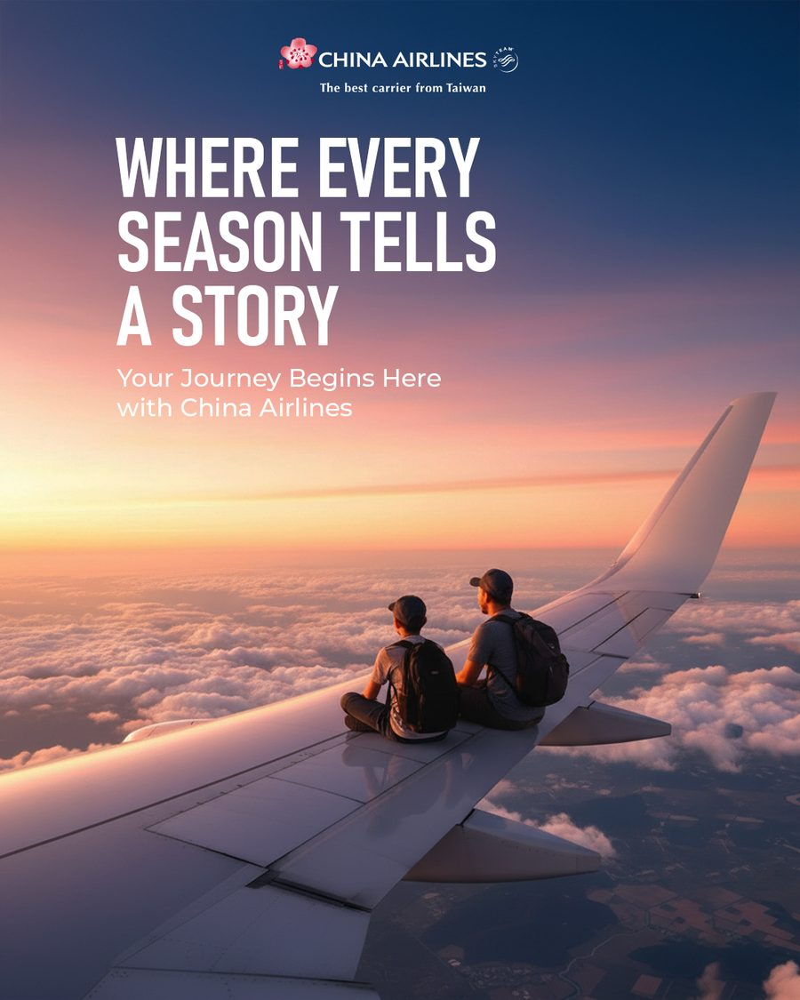
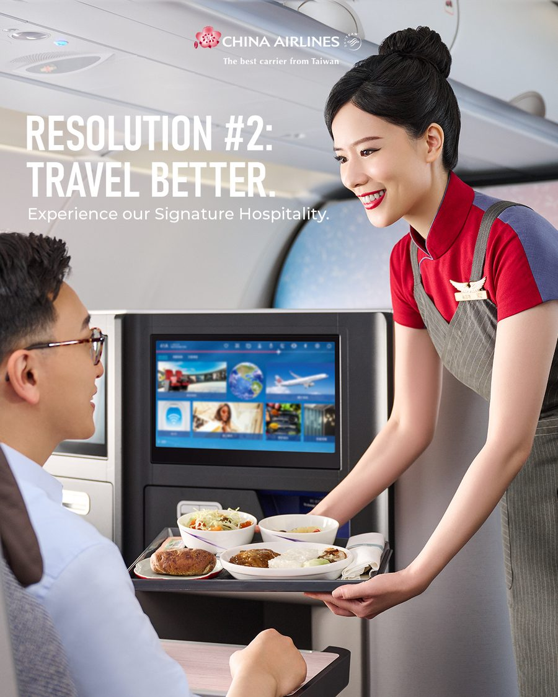
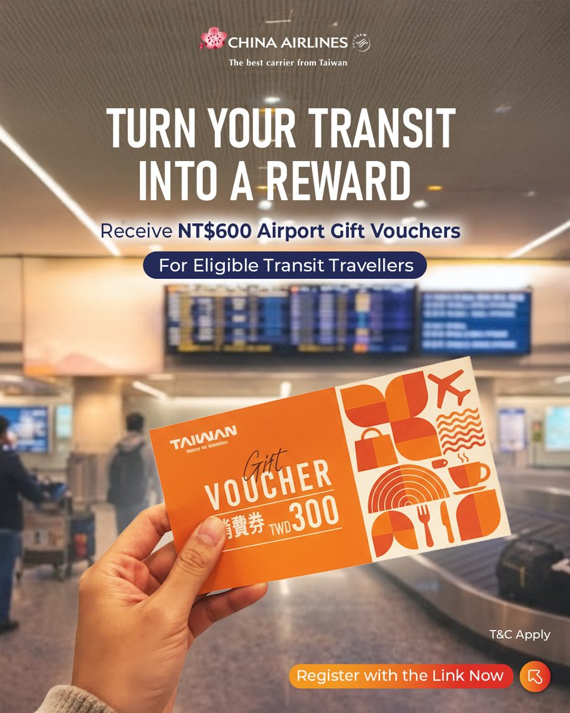
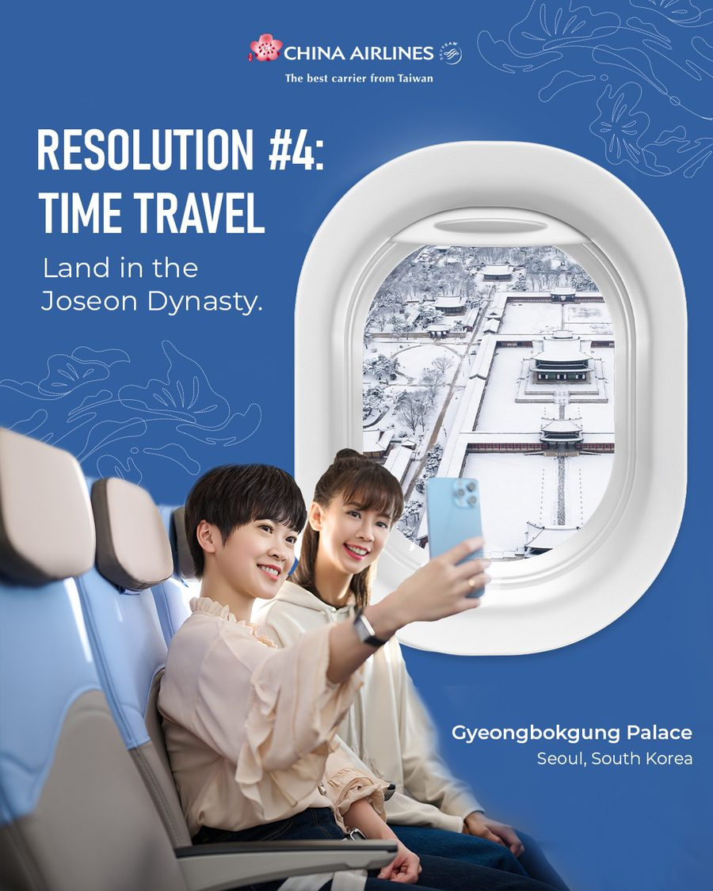
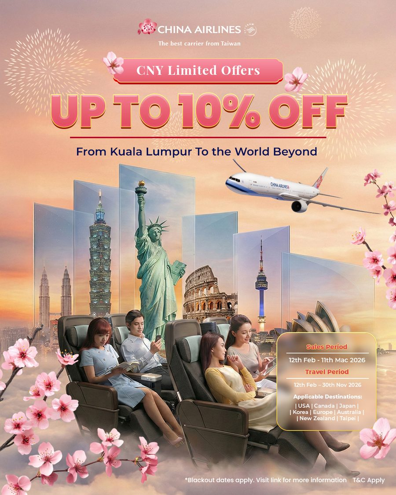
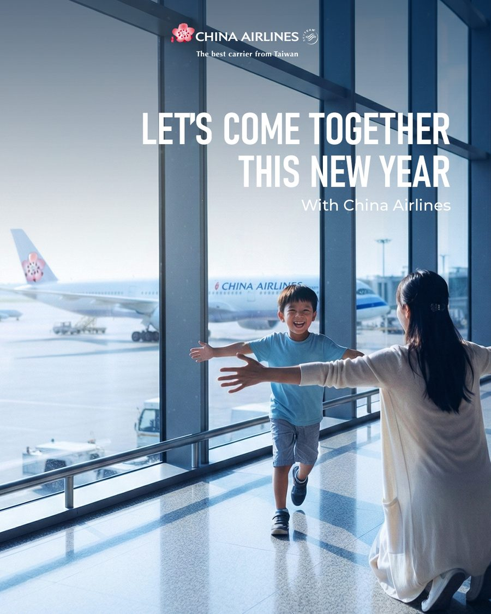
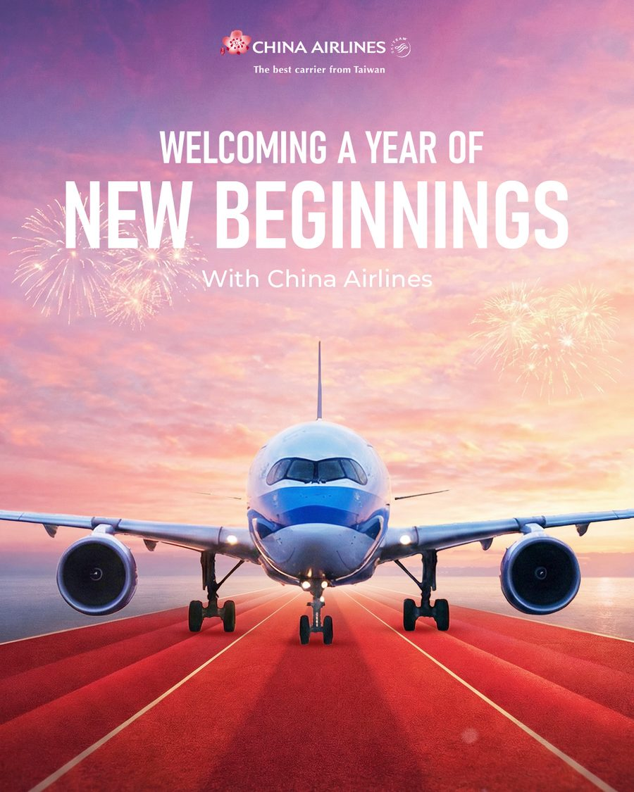
A longer form brand film that carries the same look and feeling into video.